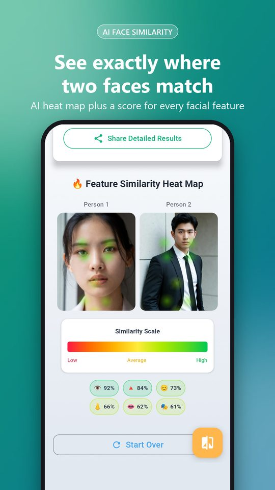
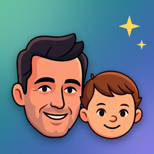
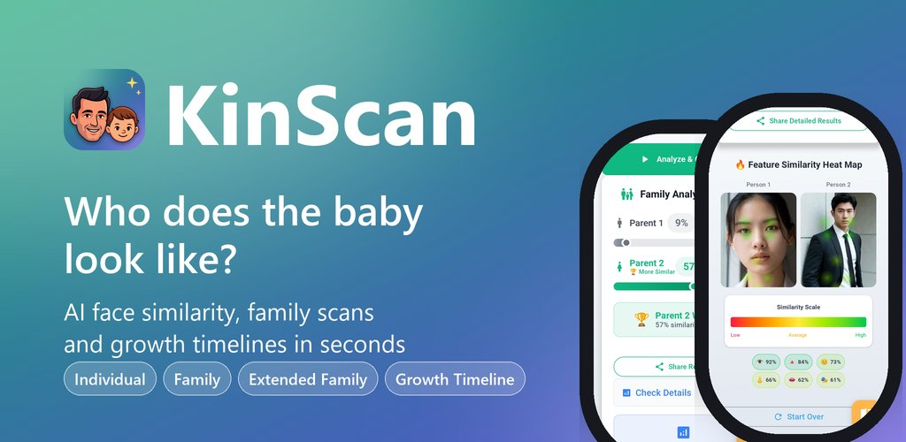
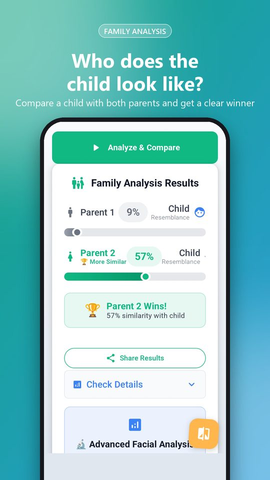
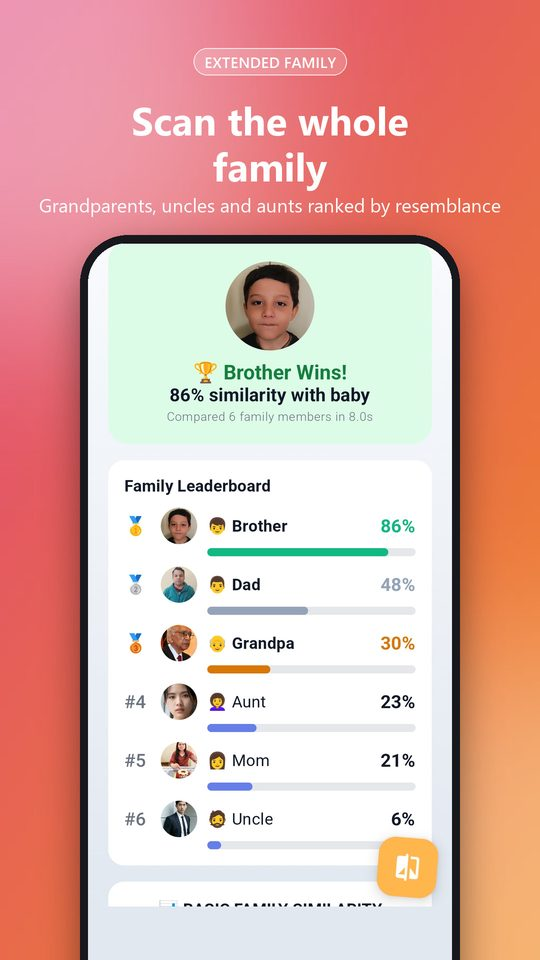
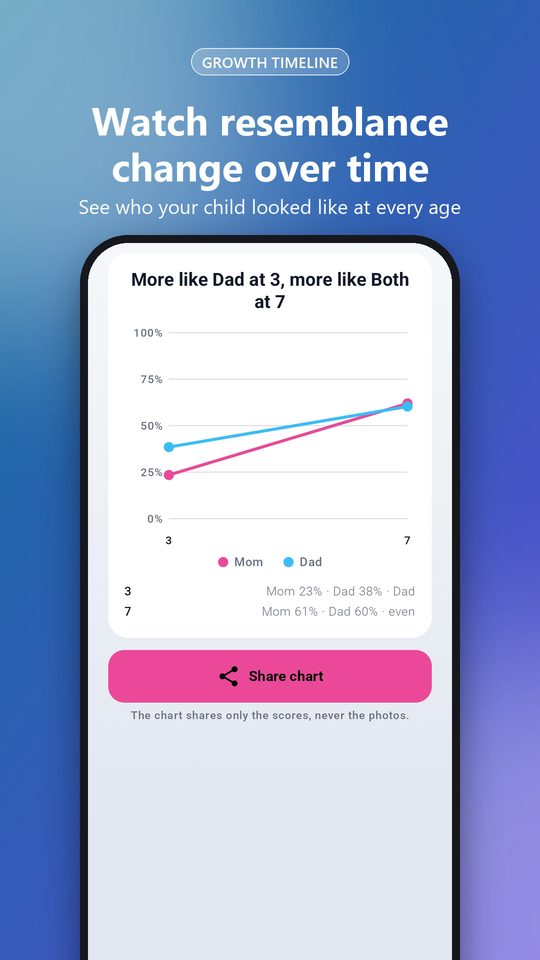

Individual
Any two photos. Get a score plus a heat map that marks where the faces match.

KinScan compares faces with AI and shows exactly where two people match: eyes, nose, mouth, face shape and more. Settle the “Mom or Dad?” debate in seconds.
Android · Free credits included to start · Photos are never stored

Every result comes with a similarity score, a feature-by-feature breakdown and a share card.

Any two photos. Get a score plus a heat map that marks where the faces match.

Child plus both parents. See who they take after, with a clear winner.

Up to six relatives ranked by resemblance, and a breakdown of who gave baby what.

Photos across the years, eyes aligned. A collage, a chart of who they looked like at every age, and a crossfade video.
No account, no sign-up. Pick photos and compare.
Clear, front-facing photos with one person each work best. Baby and grandparent photos are fine.
KinScan detects the faces and scores each feature. Most comparisons take a few seconds.
Every result has a share card built for chat and social. The card carries the scores, never the raw photos unless you choose.
Family photos deserve care. Here is exactly what happens to them.
Each photo is sent to the face-analysis service only for the comparison and deleted right after. Results live on your phone.
New installs get 5 free credits, enough for a full family comparison. Buy more only when you want the advanced features.
English, German, French, Spanish, Japanese, Korean, Hindi, Arabic and more, with a per-app language setting on Android 13+.
Free to install. Your first family comparison is on us.